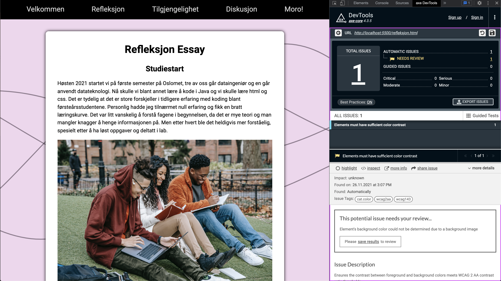
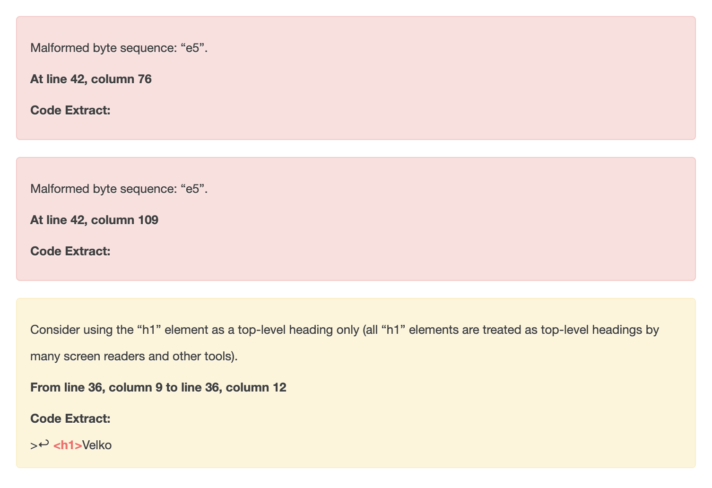
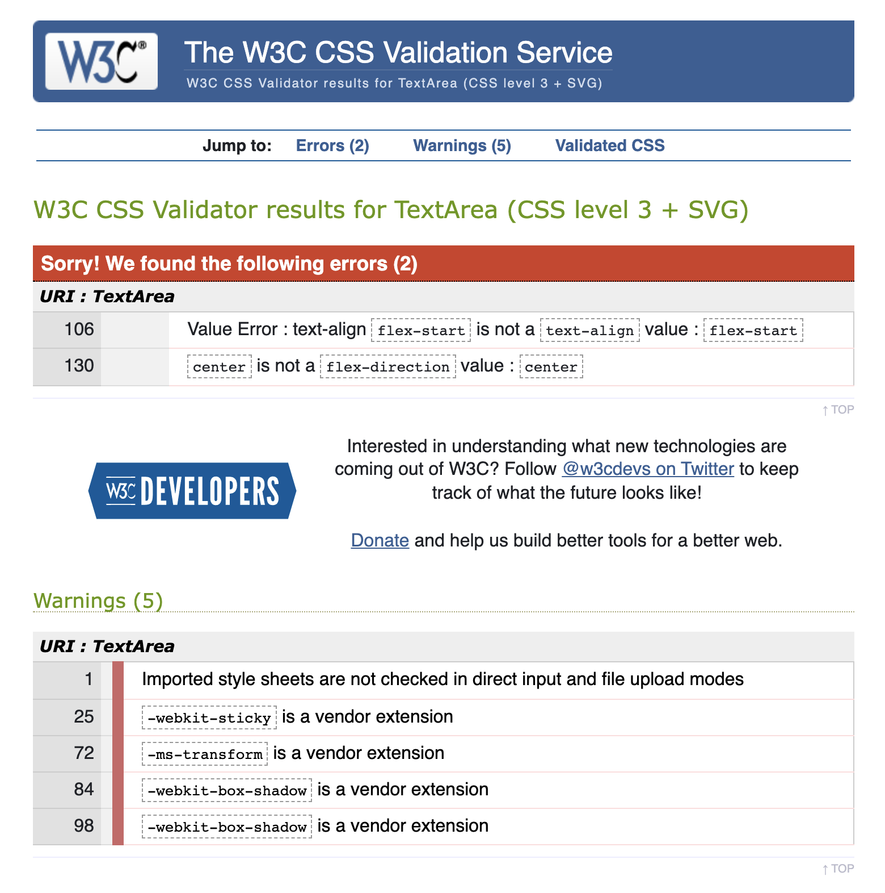

Tilgjengelighet
Det første vi gjorde for å gjøre nettstedet vårt så tilgjengelig som mulig var å strukturere HTMLkoden vår ved å bruke riktige semantiske HTML tags der det var mulig. Noen eksempler på dette er bruk av tags slik som /main/ og /section/, samtidig som vi sørget for at overskriftene (h1, h2, etc) var riktig strukturert og brukt i riktig sammenheng. Vi skrev også kommentarer i hele CSS-filen vår, og HTML-filene våre for at det skulle være lettere for nestemann å lese igjennom og forstå hva vi hadde gjort. Alle bildene på nettstedet vårt inkluderer titler og alternativ tekst, og vi har gitt klare titler til alle lenker som er inkludert på nettsiden.

Under prosessen med å lage nettstedet sjekket vi koden vår med en automatisert tilgjengelighetstest kalt "Axe". En advarsel vi mottok var å sjekke fargekontrasten mellom titlene og bakgrunnen vår, dette var enkelt å implementere og fikse. Vi holdt kontraster i tankene da vi designet resten av nettsidene. Da vi var ferdige med nettstedet, sjekket vi det igjen med Axe tilgjengelighetstest. Denne gangen fikk vi en "moderat" advarsel om at en vi hadde en HTML-innhold som ikke lå inne i en /container/. Dette var "destinasjonsside" -delen av forsiden, et bannerbilde og litt tekst for å ønske folk velkommen til nettsiden. Vi ser nå at dette ikke var den riktige måten å gjennomføre dette på. På grunn av måten vi har kodet nettsiden vår på, kan vi imidlertid ikke enkelt flytte denne kodedelen til enten "header" eller "main". Dette er noe vi vil forbedre neste gang.
Etter å ha kjørt tilgjengelighetstesten Axe, kjørte vi HTML-koden vår gjennom en HTML-validator. Forsiden på nettstedet vårt ga oss 10 feil, men 9 av disse var bare at den ikke kjente igjen norske karakterer(æ,ø,å). Den tiende feilen var relatert til vårt forrige problem med bannerbildet og teksten nevnt tidligere. Vi hadde brukt en "H1"-tag til å skrive "Velkommen", men vi hadde allerede brukt en "H1" -tag et annet sted på siden. Vi fikset dette ved å endre teksten til en vanlig "p"-kode, og ga den en CSS-ID for å style den.
Vi kjørte deretter CSS-filen vår gjennom en CSS-validator. Denne prosessen ga oss 5 advarsler, som alle var i stand til å bli forkastet. Den ga oss også to feil, vi hadde skrevet "tekst-align: flex-start" og "flex-direction: center", hvor ingen av de er gyldige. De hadde tydeligvis ingen innvirkning på koden vår, så vi fjernet ganske enkelt begge linjene.
